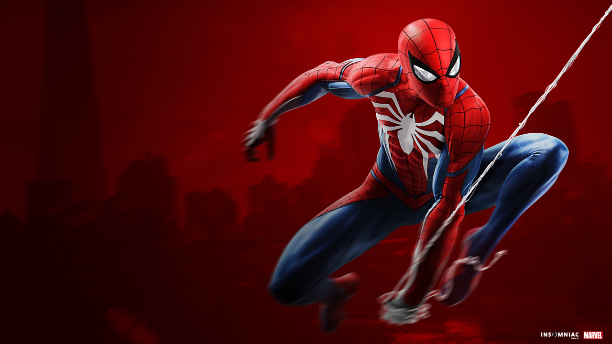

Peter Benjamin Parker es un antiguo estudiante de la Escuela de Ciencia y Tecnología de Midtown que, después de adquirir sus habilidades a causa de la mordida de una araña radiactiva, eligió combatir el crimen como el Hombre Araña. A pesar de esforzarse por mantener su identidad en secreto de todos, incluida su tía Maybelle, fue encontrado y reclutado por Anthony Stark para unirse a la Guerra Civil de los Vengadores, obteniendo un nuevo traje y tecnología a cambio. Después de ayudar a Stark, Parker conservó su traje para seguir operando como el Hombre Araña.
"Desde que me mordió esa araña, solo he tenido una semana en la que sentí que mi vida era normal." ―Peter Parker a Michelle Jones[fnt.]